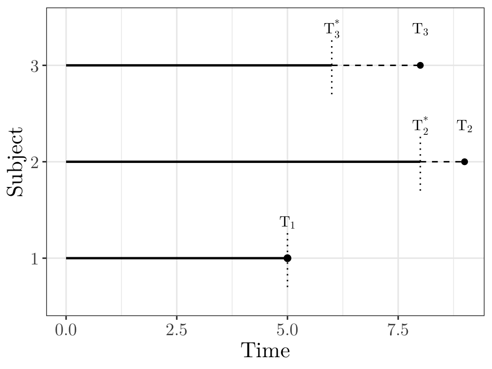

# In this figure, subject 1 is not censored and we would observe the response T_1.
# Subjects 2 and 3 are right censored: we only know that the true responses T_2 and T_3 are greater than T_2^* and T_3^*, respectively.
d <- data.frame(id = c(1, 2, 3), start = c(0, 0, 0), end = c(5, 8, 6), added = c(0, 1, 2), status = c(1, 0, 0))
p <- ggplot(d, aes(y = factor(id))) +
geom_segment(aes(x = start, xend = end, yend = factor(id)), linewidth = 0.8, colour = "black") +
geom_segment(aes(x = end, xend = end, y = as.numeric(factor(id)) - 0.3, yend = as.numeric(factor(id)) + 0.3), linetype = "dotted", colour = "black") +
geom_point(data = filter(d, status == 1), aes(x = end, y = factor(id)), size = 2) +
geom_segment(data = filter(d, status == 0), aes(x = end, xend = end + added, yend = factor(id)), linetype = "dashed", colour = "black") +
geom_point(data = filter(d, status == 0), aes(x = end + added), size = 2, shape = 16, colour = "black") +
scale_y_discrete(name = "Subject", labels = c("1", "2", "3")) + scale_x_continuous(name = "Time") +
theme_bw() + theme(text = element_text(size = 16, family = "Latin Modern Roman 10"))
p + annotate("text", x = 5.0, y = 1.18, label = "T[1]", vjust = -1, family = "Latin Modern Roman 10", parse = TRUE) + annotate("text", x = 8.0, y = 2.09, label = "T[2]^'*'", vjust = -1, family = "Latin Modern Roman 10", parse = TRUE) + annotate("text", x = 9.0, y = 2.18, label = "T[2]", vjust = -1, family = "Latin Modern Roman 10", parse = TRUE) + annotate("text", x = 6.0, y = 3.09, label = "T[3]^'*'", vjust = -1, family = "Latin Modern Roman 10", parse = TRUE) + annotate("text", x = 8.0, y = 3.18, label = "T[3]", vjust = -1, family = "Latin Modern Roman 10", parse = TRUE)